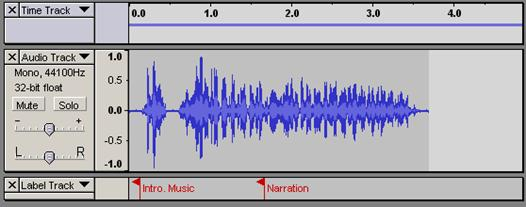

Except where otherwise noted, this material is licensed under a
Creative Commons Attribution-NonCommercial-ShareAlike 2.5 License.
The recorded or imported audio is displayed in digital format on a track. Audacity allows the user to manipulate multiple tracks to combine a variety of sounds such as vocals, guitar, drums, and keyboard. The track may be displayed as a waveform, timeline, or other format.
Audacity provides several tracks that help organize your project. Some of these are the Audio, Label, and Time tracks (see figure 9). Audio Tracks display the waveform.
Label Tracks are used to annotate an audio file. This is useful for identifying specific parts of the track and calculating precisely when they occur.
The Time Track permits the adjusting of the playback rate.
